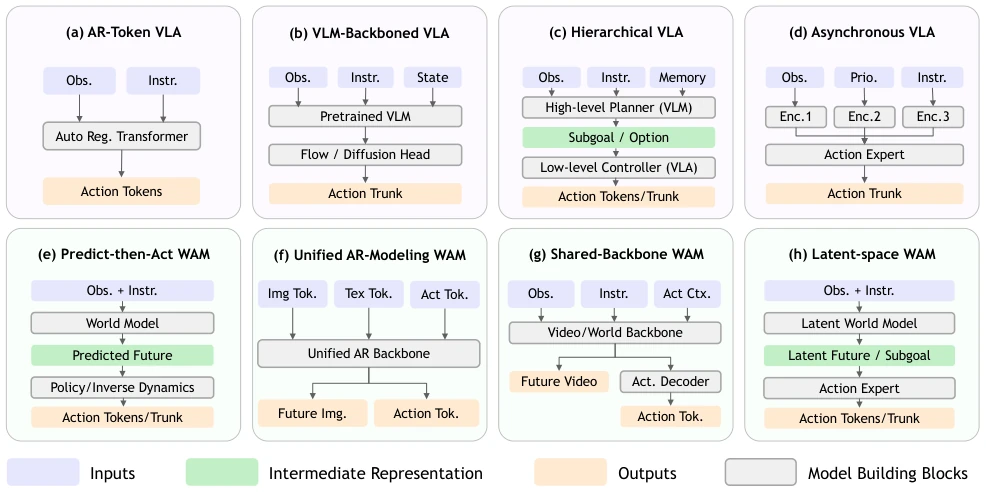
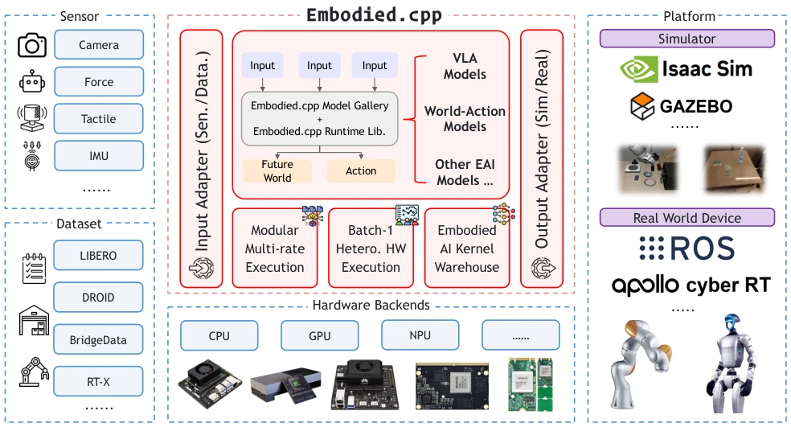

这篇论文给具身 AI 的“部署难”痛点开了个硬核药方。当前 VLA 和 WAM 模型层出不穷，但落地全靠 Python 胶水代码，效率低且难移植。Embodied.cpp 试图用 C++ 统一推理运行时，这点确实抓住了工业界对性能的追求。不过，WAM 部分目前只测了单块 Transformer 的量化效果，闭环控制尚未完全跑通，有点“雷声大雨点小”的嫌疑。虽然支持异构硬件是亮点，但面对复杂的机器人控制循环，这套架构的稳定性还得看后续实战。总的来说，是个好工具，但离“万能钥匙”还差点火候，毕竟模型架构还在快速迭代，硬编码的 C++ 核心能否跟上变化值得观察。
This paper offers a hardcore solution to the "deployment difficulty" pain point of embodied AI. Currently, VLA and WAM models are emerging one after another, but deployment relies entirely on Python glue code, which is inefficient and hard to port. Embodied.cpp attempts to unify the inference runtime with C++, which indeed captures the industry's pursuit of performance. However, the WAM part has only tested the quantization effect of a single Transformer block so far, closed-loop control has not been fully run through, raising suspicions of "much thunder and little rain". Although supporting heterogeneous hardware is a highlight, facing complex robot control loops, the stability of this architecture still depends on subsequent practical tests. Overall, it is a good tool, but still lacks some maturity to be a "universal key", after all, model architectures are still iterating rapidly, whether the hard-coded C++ core can keep up with changes is worth observing.
Embodied AI models (VLA/WAM) are developing rapidly, but the deployment ecosystem is severely fragmented. Existing inference frameworks such as llama.cpp [13], ONNX Runtime [14], or vLLM-Omni [16] mainly target request-response services, pursuing throughput, and are unsuitable for embodied closed-loop control. vla.cpp [40] supports VLA, but lacks general support for WAM and heterogeneous hardware. Embodied deployment requires multi-rate execution (perception and control frequencies differ), low-latency batch-1 inference, and extended interfaces (non-fixed tokens). Existing systems cannot simultaneously satisfy these runtime contracts, leading to a need for extensive custom code for model deployment, hindering migration from simulation to real machines. Especially edge devices have limited resources, general frameworks struggle to optimize small-batch inference, urgently needing a specialized runtime.

Figure 1 | Architectural taxonomy of embodied models. We first separate VLA models (a-d) from WAMs (e-h), and then organize each family by internal inference structure.
Embodied.cpp adopts a five-layer architecture: input adapter, sequence builder, backbone executor, head plugin, deployment adapter. The core is a unified execution path, pluginizing the differing parts. Supports modular multi-rate execution, allowing perception, backbone, and action head to run at different frequencies, adapting to hierarchical or asynchronous models. For heterogeneous hardware (CPU/GPU/NPU), adopts latency-priority fused inference, optimizing batch-1 performance and reducing data movement overhead. Provides extended operator and I/O support, adapting to sensors and simulators. Through backend abstraction, achieves compile-once, multi-end deployment. Specifically, the input adapter processes multimodal data, the sequence builder reorganizes tokens, the backbone executor reuses Transformer logic, the head plugin handles action decoding, and the deployment adapter interfaces with hardware. This design makes the core stable and extension flexible, solving the problem that traditional runtimes cannot adapt to the embodied control rhythm. Design principles include modular multi-rate execution, latency-priority fused execution, and extended operator support, ensuring efficient inference on heterogeneous devices.

Figure 2 | Project overview of Embodied.cpp. Diverse sensors and datasets enter through input adapters, model execution is unified around one embodied-model runtime that covers VLA models, WAMs, and future variants, and outputs are bridged to simulators and real robots through deployment adapters. Beneath this shared path, three runtime capabilities directly address the core challenges: modular multi-rate execution, latency-first batch-1 execution on heterogeneous hardware, and an embodied AI kernel warehouse for reusable operators and model-specific kernels.
On VLA models, HY-VLA achieved 100% success rate on RoboTwin tasks, pi0.5 was 91%. WAM evaluation used LingBot-VA single Transformer block, after quantization VRAM dropped from 312.2 MiB to 88.1 MiB, accuracy loss was minimal. Proved the efficiency of the C++ path. HY-VLA has higher latency due to larger backbone network, pi0.5 has lower latency due to lightweight backbone. WAM tests showed MAE less than 3.3e-2 after quantization, cosine similarity greater than 0.9997. Although WAM closed-loop was not fully tested, single-block performance has validated memory optimization potential. Experiments show that unified C++ runtime can significantly reduce VRAM usage while maintaining task success rate, providing a viable solution for embodied model deployment.